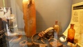

licht, zeer belangrijk
Dagje op pad met de Vrienden van Oud Leerdam
We komen in de buurt van het fort
We beginnen uiteraard met koffie
onder de indruk van het forse bouwwerk
naar het binnenste van het fort
licht, zeer belangrijk

p1010217.jpg
stelsel van verblijven en gangen
wij zijn (waarschijnlijk) de laatsten...

't mocht niet, anders...
kazemat (in een vestingwerk), tegen vijandelijk vuur gedekte en van een schietgat voorziene ruimte voor de opstelling van een vuurwapen

vondsten van jaren her

p1010237.jpg
nog meer vondsten w.o. losse flodders(geen wonder)
Bijna 70 jaar geleden: Fort Hoofddijk, okt. 1939 - onderofficierskamer
A.A. Pelgrim links schreef in brief 17-10-1939 'Net op de foto gegaan!'
'De luitenant,' wie weet hoe hij heet/heette
Waarschijnlijk Fort bij Vechten 1939, sgt Pelgrim links.
Achterop foto staat: 'Zet 'm op, witte muizen' (wisten zij veel...)